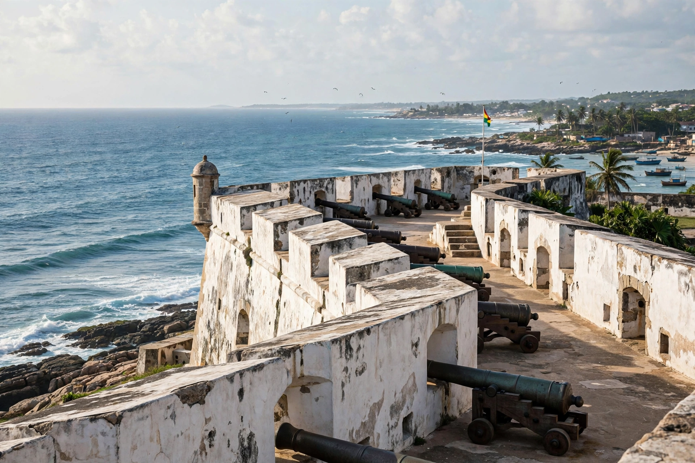

Slave-trading fort in Cape Coast, Ghana
| Cape Coast Castle | |
|---|---|
 Cape Coast Castle on the Gulf of Guinea | |
| Location | Cape Coast, Central Region, Ghana |
| Built | 1653 (Swedish); expanded under British rule |
| Original use | Trading post; major slave-trading fort |
| UNESCO | World Heritage Site (1979), part of "Forts and Castles, Volta, Greater Accra, Central and Western Regions" |
Cape Coast Castle (Swedish: Carolusborg) is one of about forty "slave castles", or large commercial forts, built on the Gold Coast of West Africa (now Ghana) by European traders. It is a whitewashed fortress on the Atlantic shore at Cape Coast and one of the largest and best-known sites of the transatlantic slave trade. It is now a museum and a UNESCO World Heritage Site.
The first timber fortification on the site was built in 1653 by the Swedish Africa Company and named Carolusborg after King Charles X of Sweden. Control passed between Swedish, Danish, Dutch, and local Fetu hands before the English seized it in 1664; the Royal African Company made it a headquarters of the British slave trade on the Gold Coast. Enlarged through the 18th century, the castle held up to a thousand enslaved Africans at a time in its underground dungeons before they were forced through the "door of no return" onto waiting ships bound for the Americas.
The castle's dungeons, governor's apartments, chapel, and cannons are preserved as a memorial and museum operated by the Ghana Museums and Monuments Board, interpreting the history of the slave trade for visitors, including many from the African diaspora. In 2009, U.S. President Barack Obama and First Lady Michelle Obama — who has African-American ancestry — visited the castle during their trip to Ghana, a widely covered moment of remembrance.